explain
explain（执行计划）: 使用explain关键字可以模拟优化器执行sql查询语句，从而知道MySQL是如何处理sql语句。explain主要用于分析查询语句或表结构的性能瓶颈。
id
select查询的序列号，包含一组数字，表示查询中执行select子句或操作表的顺序，该字段通常与table字段搭配来分析。
- id相同，执行顺序从上到下。
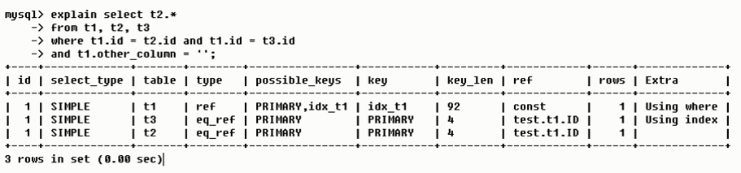
id相同，执行顺序从上到下，搭配table列进行观察可知，执行顺序为t1->t3->t2。
- id不同，如果是子查询，id的序号会递增，id值越大执行优先级越高。
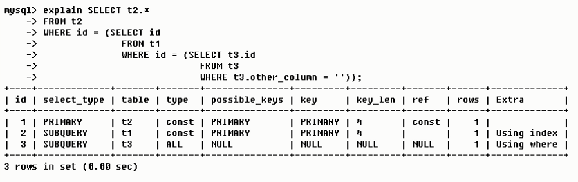
如果是子查询id的序号会递增，id值越大执行优先级越高，搭配table列可知，执行顺序为t3->t1->t2。
select_type
查询的类型，主要用于区别普通查询、联合查询、子查询等复杂的查询。其值主要有六个：
SIMPLE: 简单的select查询，查询中不包含子查询或union查询。
PRIMARY: 查询中若包含任何复杂的子部分，最外层查询为PRIMARY，也就是最后加载的就是PRIMARY。
SUBQUERY: 在select或where列表中包含了子查询，就为被标记为SUBQUERY。
DERIVED: 在from列表中包含的子查询会被标记为DERIVED(衍生)，MySQL会递归执行这些子查询，将结果放在临时表中。
UNION: 若第二个select出现在union后，则被标记为UNION，若union包含在from子句的子查询中，外层select将被标记为DERIVED。
UNION RESULT: 从union表获取结果的select。
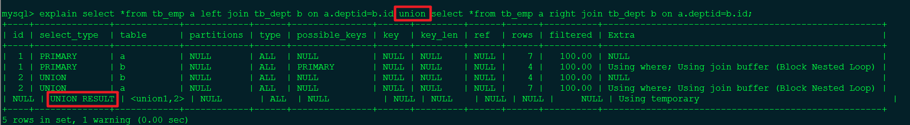
table
显示sql操作属于哪张表的。
partitions
官方定义为The matching partitions（匹配的分区），该字段应该是看table所在的分区吧（不晓得理解错误没）。值为NULL表示表未被分区。
type
表示查询所使用的访问类型，type的值主要有7种，该值表示查询的sql语句好坏，从最好到最差依次为：system>const>eq_ref>ref>range>index>ALL。
注：一般来说，需保证查询至少达到range级别，最好能达到ref。
- system
表只有一行记录（等于系统表），是const的特例类型（mysql大于5.7版本后，system由const代替）
- const
表示通过一次索引就找到了结果，常出现于primary key或unique索引。因为只匹配一行数据，所以查询非常快。如将主键置于where条件中，MySQL就能将查询转换为一个常量。
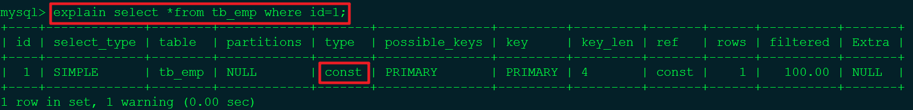
3.eq_ref
唯一索引扫描，对于每个索引键，表中只有一条记录与之匹配。常见主键或唯一索引扫描。
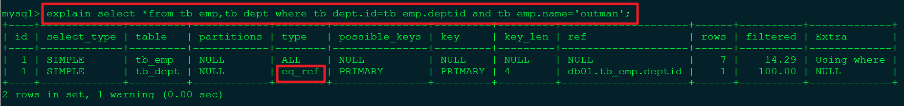
- ref
非唯一性索引扫描，返回匹配某个单独值的所有行。本质上也是一种索引访问，返回匹配某值（某条件）的多行值，属于查找和扫描的混合体。
- range
只检索给定范围的行，使用一个索引来检索行，可以在key列中查看使用的索引，一般出现在where语句的条件中，如使用between、>、<、in等查询。
这种索引的范围扫描比全表扫描要好，因为索引的开始点和结束点都固定，不用扫描全索引。
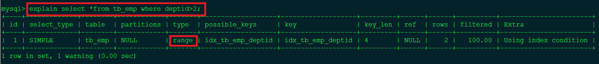
特殊例子：deptid为非唯一性索引，id为主键索引（唯一索引）
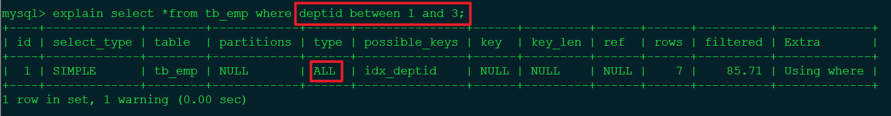
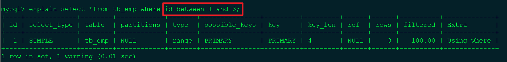
对比两图，可以看到使用deptid和id进行操作，其type的值一个是ALL也就是进行了全表扫描，一个是range进行了指定索引范围值检索。可能原因deptid并不是唯一索引。
- index
全索引扫描。
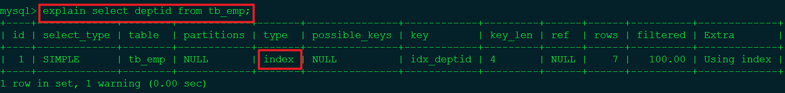
- ALL
全表扫描。
注：index和ALL的区别：index只遍历索引树，通常比ALL快，因为索引文件通常比数据文件小。虽说index和ALL都是全表扫描，但是index是从索引中读取，ALL是从磁盘中读取。
possible_keys、key、key_len
possible_keys：显示可能应用在表中的索引，可能一个或多个。查询涉及到的字段若存在索引，则该索引将被列出，但不一定被查询实际使用。
key：实际中使用的索引，如为NULL，则表示未使用索引。若查询中使用了覆盖索引，则该索引和查询的select字段重叠。
key_len：表示索引中所使用的字节数，可通过该列计算查询中使用的索引长度。在不损失精确性的情况下，长度越短越好。key_len显示的值为索引字段的最大可能长度，并非实际使用长度，即key_len是根据表定义计算而得，并不是通过表内检索出的。
简单理解：possible_keys表示理论上可能用到的索引，key表示实际中使用的索引。
例：
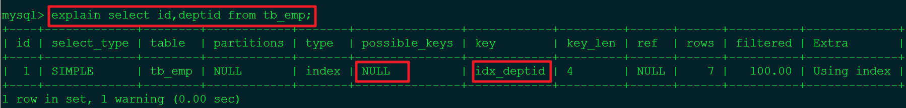
possible_keys为NULL表示可能未用到索引，但key=idx_deptid表示在实际查询的过程中进行了索引的全扫描。
ref
显示查询条件等号后面的东西：
如果是常量等值（字符串也是常量，或者数字之类的），则显示const；
如果是连接查询，则会显示关联的字段。
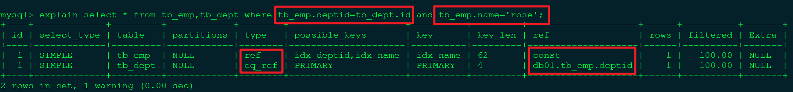
注：由于id相同，因此从上到下执行：
tb_emp表为非唯一性索引扫描，实际使用的索引列为idx_name，由于tb_emp.name='rose'为一个常量，所以ref=const。
tb_dept.id为唯一索引扫描，从sql语句可以看出，实际使用了PRIMARY主键索引，ref=db01.tb_emp.deptid表示关联了db01数据库中tb_emp表的deptid字段。
rows
根据表统计信息及索引选用情况大致估算出找到所需记录所要读取的行数。当然该值越小越好。
filtered
百分比值，表示存储引擎返回的数据经过滤后，剩下多少满足查询条件记录数量的比例。
Extra
显示十分重要的额外信息。其取值有以下几个：
使用优先级Using index>Using filesort（九死一生）>Using temporary（十死无生）。也就说出现后面两项表明sql语句是非常烂的，急需优化！！！
1. Using filesort
Using filesort表明mysql会对数据使用一个外部的索引排序，而不是按照表内的索引顺序进行读取。
mysql中无法利用索引完成的排序操作称为“文件排序”。
出现Using filesort就非常危险了，在数据量非常大的时候几乎“九死一生”。出现Using filesort尽快优化sql语句。
例：deptname字段未建索引的情况。
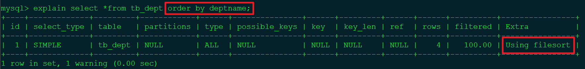
2. Using temporary
使用了临时表保存中间结果，常见于排序order by和分组查询group by。非常危险，“十死无生”，急需优化。
例：将tb_emp中name的索引先删除，出现如下图结果，非常烂，Using filesort和Using temporary，“十死无生”。
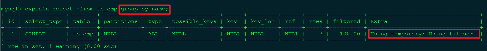
例：为name字段创建索引后。
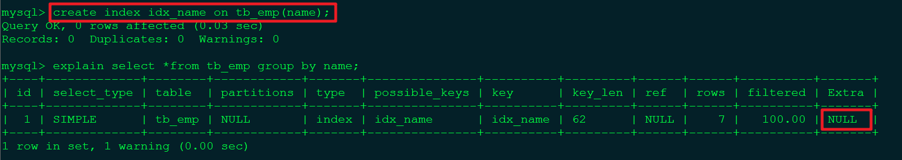
3. Using index
表明相应的select操作中使用了覆盖索引，避免访问表的额外数据行，效率不错。
例：为deptname字段创建索引后。
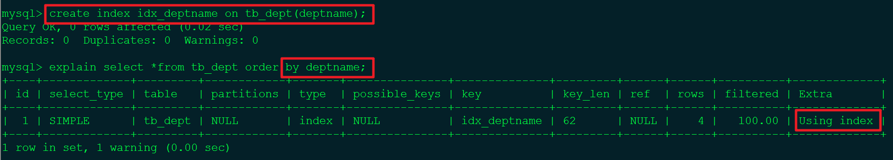
- 如果同时出现了Using where，表明索引被用来执行索引键值的查找。（where deptid=1）
例：删除tb_emp表中name和deptid字段的单独索引，创建复合索引。
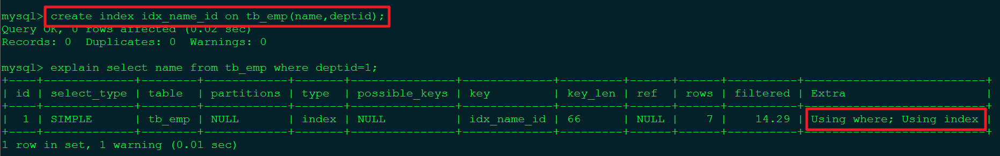
通过上面的例子理解：创建了（name，deptid）的复合索引，查询的时候也使用复合索引或部分，这就形成了覆盖索引。
- 如果没有同时出现Using where，表明索引用来读取数据而非执行查找动作。
总结
explain（执行计划）包含的信息十分的丰富，着重关注以下几个字段信息。
id，select子句或表执行顺序，id相同，从上到下执行，id不同，id值越大，执行优先级越高。
type，type主要取值及其表示sql的好坏程度（由好到差排序）：system>const>eq_ref>ref>range>index>ALL。保证range，最好到ref。
key，实际被使用的索引列。
ref，关联的字段，常量等值查询，显示为const，如果为连接查询，显示关联的字段。
Extra，额外信息，使用优先级Using index>Using filesort（九死一生）>Using temporary（十死无生）。
着重关注上述5个字段信息，对日常生产过程中调优十分有用。